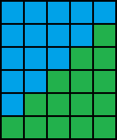

Szybki algorytm porządkowania
W poprzedniej lekcji pokazaliśmy jak podzielić tablicę na trzy części - napisaliśmy
w tym celu specjalną funkcję „podziel”. Pierwsza część tablicy zawierała liczby
mniejsze od „wartości osiowej” („wartość osiowa” to wartość pierwszego elementu
fragmentu tablicy, na którym wywołujemy funkcję „podziel”). Druga część zawierała
liczby równe tej wartości, natomiast trzecia zawierała liczby większe od
„wartości osiowej”. W tej lekcji zajmiemy się wykorzystaniem tej funkcji
do uporządkowania tablicy liczb.

W osobnym oknie pojawiły się dwie tablice liczb: górna tablica służy tylko do wprowadzania
liczb i prezentuje stan tablicy przed uruchomieniem programu. Natomiast dolna tablica
jest po starcie programu wypełniona liczbami z górnej tablicy. Funkcja „uporzadkuj”
powinna posortować elementy w dolnej tablicy, aby tego dokonać funkcja „uporzadkuj”
powinna wywoływać funkcję specjalną „podziel(idx1, idx2, &i1, &i2)”.
Funkcja „podziel” działa zgodnie z warunkami omówionymi w poprzedniej lekcji.
Więcej informacji na temat tej funkcji można uzyskać czytając treść zakładki
„funkcje specjalne”.
Twoim zadaniem jest zaimplementować funkcję „void uporzadkuj(idx1, idx2)”.
Funkcja „uporzadkuj” przyjmuje dwa indeksy: znacznik początku i końca tablicy.
Funkcja „main” będzie wywoływać tę funkcję z paramatrami 0 oraz n,
gdzie n oznacza wielkość tablicy. Funkcja powinna uporządkować elementy
talicy od najmniejszego do największego.
W razie problemów z implementacją tej funkcji możesz skorzystać z dwóch wskazówek.
Po zakończeniu implementacji swojej funkcji powinieneś porównać swoje rozwiązanie
z rozwiązaniem wzorcowym, a następnie powinieneś przeczytać podsumowanie.